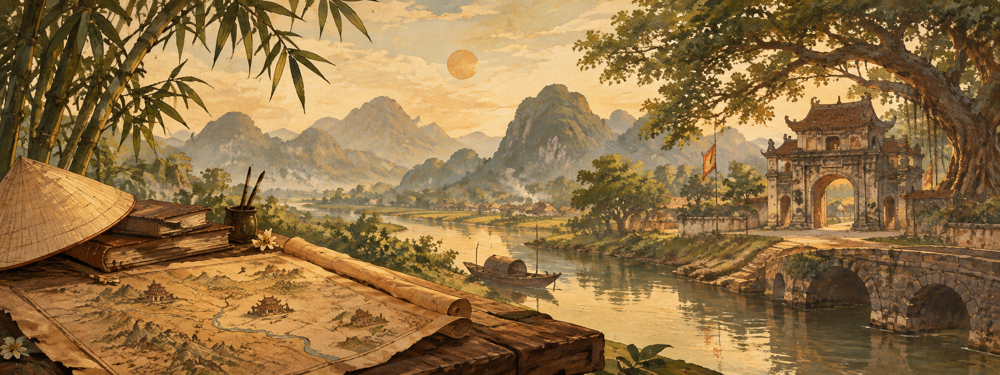
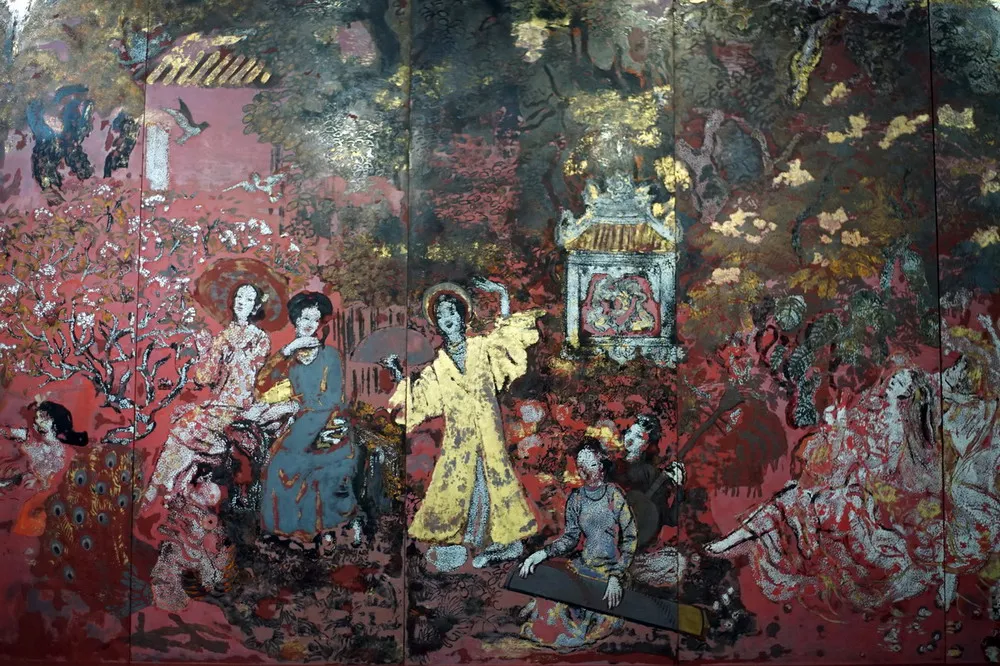
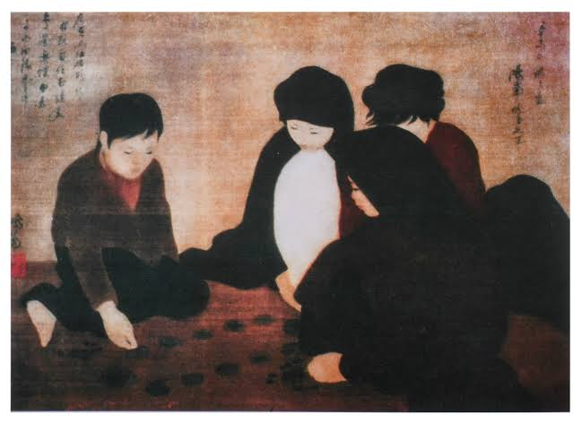
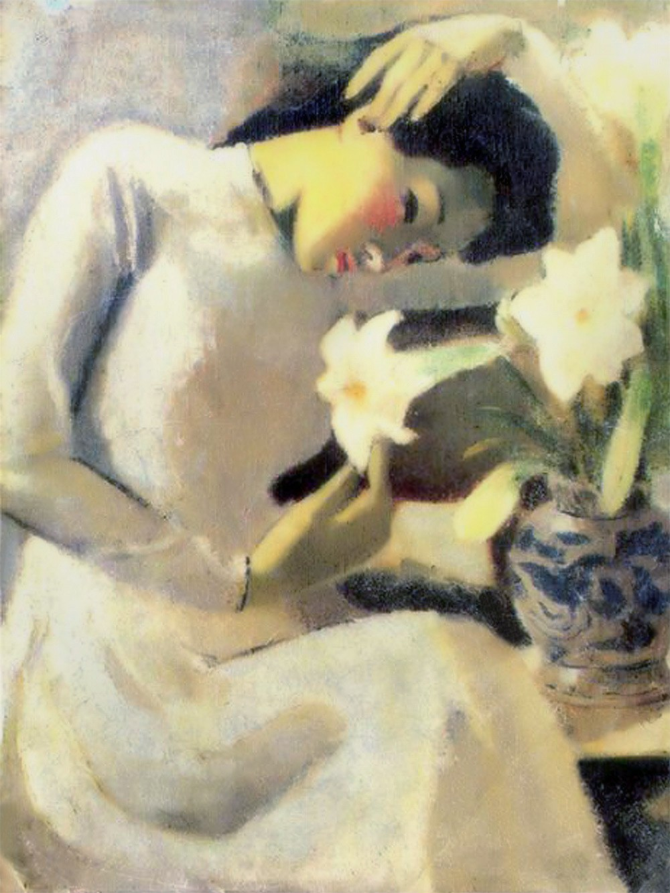

Dựng nước
Những dấu ấn đầu tiên của văn hóa và nghệ thuật Việt cổ.
Lịch sử trong từng nét vẽ

VIỆT NAM QUA NGHỆ THUẬT
Khám phá hành trình ngàn năm văn hiến Việt Nam qua những kiệt tác nghệ thuật đặc sắc.
“Mỗi tác phẩm nghệ thuật
là một trang sử,
mỗi nét vẽ là một lời kể
về dân tộc.”
KHÁM PHÁ
Lựa chọn một chủ đề để bắt đầu hành trình tìm hiểu lịch sử và văn hóa Việt Nam.
Khám phá những tác phẩm hội họa nổi bật của nghệ thuật Việt Nam.
Tìm hiểu những công trình kiến trúc mang dấu ấn qua từng thời kỳ.
Chiêm ngưỡng những hình tượng và tác phẩm điêu khắc đặc sắc.
Khám phá vẻ đẹp mộc mạc trong đời sống và văn hóa dân gian.
Gặp gỡ những con người đã để lại dấu ấn trong lịch sử dân tộc.
Lắng nghe những câu chuyện phía sau các sự kiện và tác phẩm nghệ thuật.
DÒNG CHẢY LỊCH SỬ
Mỗi thời kỳ mang đến một sắc màu nghệ thuật và một câu chuyện riêng.
Những dấu ấn đầu tiên của văn hóa và nghệ thuật Việt cổ.
Nghệ thuật phát triển cùng những triều đại và nền văn hóa rực rỡ.
Những thay đổi trong hội họa, kiến trúc và nghệ thuật cung đình.
Sự giao thoa giữa nghệ thuật truyền thống và những ảnh hưởng mới.
Một giai đoạn mới của mỹ thuật Việt Nam với nhiều tên tuổi nổi bật.
DẤU ẤN NỔI BẬT
Một vài tác phẩm tiêu biểu giúp kể lại những câu chuyện về con người và văn hóa Việt.

Nguyễn Gia Trí

Nguyễn Phan Chánh

Tô Ngọc Vân
GÓC NHÌN VĂN HÓA
Nghệ thuật không chỉ nằm trong những bức tranh hay công trình. Nó còn hiện diện trong cách con người sinh hoạt, vui chơi, lao động và gìn giữ phong tục.
01 Đời sống
02 Nghệ thuật
03 Phong tục
“
Hiểu nghệ thuậtTiếp tục hành trình →
là hiểu thêm một phần
tâm hồn Việt Nam.